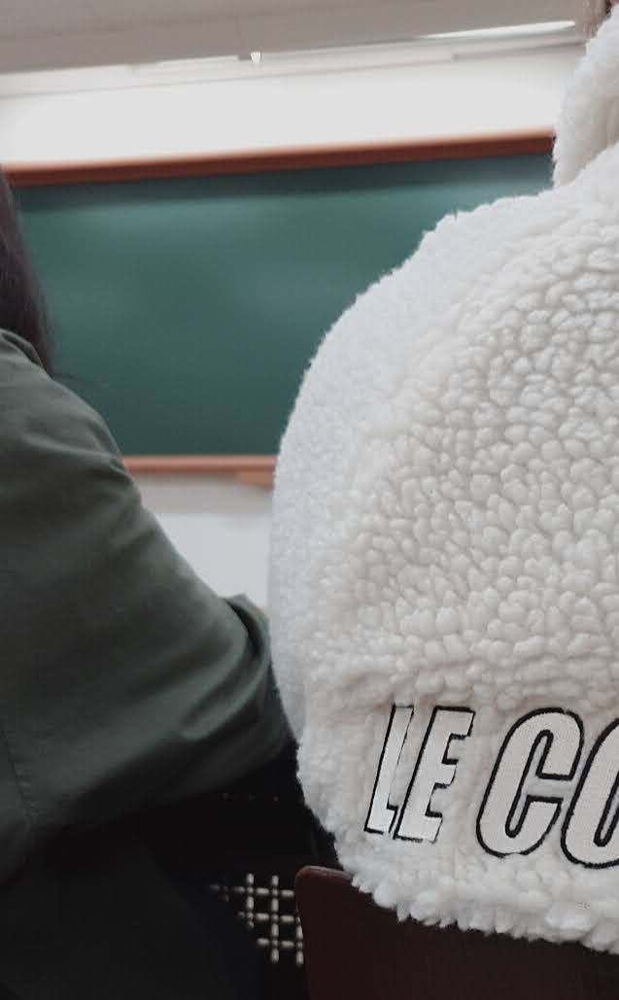
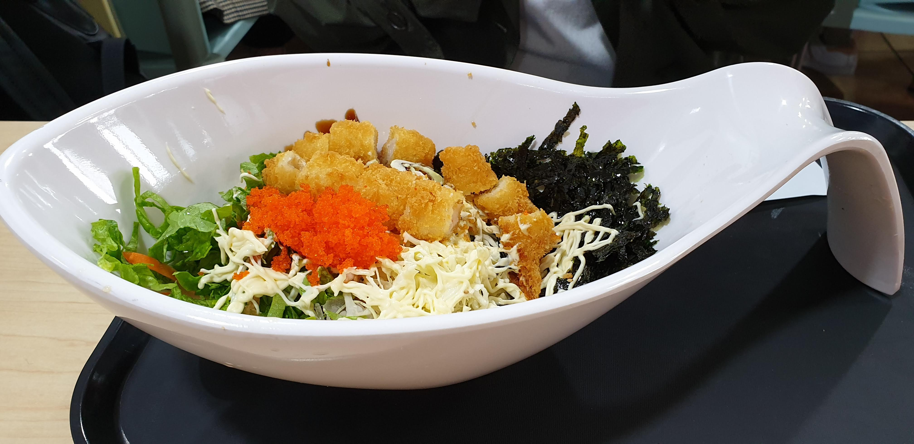

최고양신 홈페이지에 오신걸 환영합니다.
최고양신이란?
최은지 고경아 양가영 신민선의 성을 따서 만든 성신여대 수학과 패밀리입니다.
- 최은지
- 고경아
- 양가영
- 신민선
역사
첫 만남
2019년 3월 4일 월요일 첫 대학생활 개강날 기초수학 수업에서 처음 마주쳤습니다.

수업이 끝나고 부끄러움 많던 신민선이 말을 건냅니다.
신: 우리.. 도서관 구경하고 학식 먹을래...?
그런 용기에 보답하듯 친구들은 좋다며 학식을 먹었습니다.

이후에 고경아가 말했죠.. 그 수줍에 속으면 안됐다고..